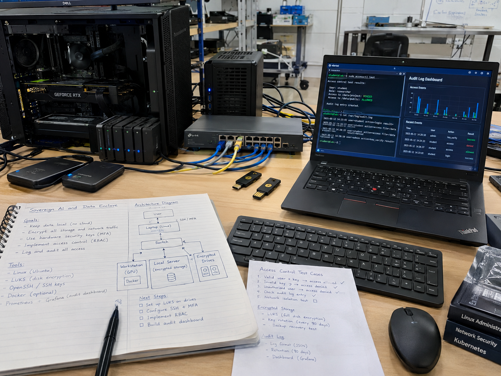

Sovereign AI and Data Enclave
A security-controlled private AI enclave built on the Chakor stack: Keycloak identity with synthetic clearance labels, OPA and OpenTDF policy enforcement, HSM-backed OpenBao keys, pgvector retrieval filtered by authorization before similarity search, and a tamper-evident audit log.
Overview
The Sovereign AI and Data Enclave is a planned, security-controlled private AI system: a retrieval-augmented assistant where Keycloak identity, OPA policy, OpenTDF data protection, HSM-backed keys, and label-filtered pgvector search decide what each user may see before the language model ever runs. This page is a build guide; nothing here is built or tested yet.
DND's AI strategy stresses well-governed data, secure cloud, and data-centric security (verify wording). The Canadian sovereignty debate around AI focuses on foreign-jurisdiction exposure, the US CLOUD Act is the usual example, and on whether the keys that protect Canadian data are themselves held in Canada; at least one senator's op-ed makes exactly that case, and it is opinion, not policy. This build is the bench-scale engineering answer to that debate: a small enclave where every key, byte, process, and log lives on hardware I control, with a published sovereignty statement showing who can reach what.
The base is my existing private-AI stack, Chakor. Chakor already runs local models with no telemetry on homelab hardware; this build adds the controls and the proof on top: identity with synthetic clearance attributes, policy that travels with the data, keys sealed in hardware, retrieval that filters by authorization before it ranks by similarity, and a tamper-evident log of every retrieval and answer. The design rule throughout: the model is never the security boundary. Guardrails are deterministic checks outside the model, and any action beyond answering a question requires human approval.
All labels in this build are synthetic. The corpus is synthetic documents marked with notional clearance, compartment, and releasability values so the controls can be exercised without ever touching real protected material. Status everywhere on this page is Planned: the guide is published so the design can be scrutinized before a single container is deployed.
Concept Illustration

Target Design
Unlike the drone and vehicle builds, this one has no single government specification sheet with pass/fail numbers. The target is a control set drawn from DND's stated AI direction (verify wording) and from the OWASP LLM Top 10 (2025). Each row is a design requirement the build must meet and measure; the status table below tracks each one honestly.
| Control area | Component | Design requirement |
|---|---|---|
| Identity | Keycloak (OIDC) | User tokens carry attributes for notional clearance, compartment, and releasability. All labels synthetic. |
| Policy (level 1) | OPA with Rego | Policy compares user attributes with document labels on every request. Policy unit tests are written first, including negative tests, before any data is ingested. |
| Protection (level 2) | OpenTDF | Attribute-based access control wrapped around the data itself, so policy travels with the document. A Key Access Server releases decryption keys only to entities with the right attributes; key management is federated. |
| Keys | OpenBao + HSM | PKCS#11 auto-unseal against an HSM (SoftHSM for development, a hardware token for the real deployment). Transit engine for envelope encryption. Storage volumes encrypted with LUKS bound to the TPM. |
| Retrieval | PostgreSQL + pgvector | Row-level security and label columns filter by authorization before similarity search. Recall under filtering is measured, because approximate indexes can apply filters after the scan and silently return fewer results (verify pgvector iterative index scan behaviour). |
| Serving | Containers or Firejail | Model serving is sandboxed, egress is default-deny with an explicit allow-list, no telemetry leaves the box, model hashes are checked, and model artifacts are signed. |
| Audit | Tamper-evident decision log | Every retrieval and every answer is logged to the hash-chained decision log from the decision black box build. Actions beyond answering require human approval. |
| Guardrails | Deterministic checks | Label checks on outputs run outside the model. The language model is never trusted as a security control. |
What the Build Will Prove
A homelab enclave cannot certify anything, and this one will not claim to. What it can prove, with published methods and data, is narrower and more useful:
- Authorization-before-retrieval works and is measurable. Canary documents at every synthetic label, attacked with indirect injection, query rewriting, and label spoofing, show whether a single cross-label retrieval escapes. Target: zero across the whole attack run.
- Filtering does not silently gut recall. Retrieval recall under label filtering is measured against an unrestricted baseline, so the control is shown to hide only what it should, not everything.
- Keys can live on Canadian-held hardware. The master key never leaves the HSM token; pulling the token seals the vault. The sovereignty statement shows, in a table, where each key, byte, process, and log lives and who can reach it.
- Degraded operation fails safe. An edge box with a small model and a local store keeps working over store-and-forward sync when the network degrades, and loses capability rather than leaking when it cannot check policy.
- Every answer is accountable. The tamper-evident log makes it possible to reconstruct exactly what was retrieved and answered, by whom, under which policy decision.
Architecture
synthetic clearance, compartment,
releasability attributes"] GW["Enclave gateway"] OPA["OPA policy check
Rego: attributes vs labels"] KAS["OpenTDF Key Access Server
keys only to matching attributes"] BAO["OpenBao
PKCS#11 auto-unseal, transit engine"] HSM["HSM token
master key never leaves hardware"] RET["Retrieval service"] PG[("PostgreSQL + pgvector
row-level security + label columns")] LLM["LLM serving
Firejail/container, default-deny egress"] GR["Guardrails
deterministic label checks on output"] ANS["Answer to analyst"] AUD[("Tamper-evident audit log
decision black box")] USER --> KC --> GW GW --> OPA GW --> KAS --> BAO --> HSM GW --> RET --> PG RET --> LLM --> GR --> ANS GW --> AUD RET --> AUD GR --> AUD
Figure 1: every request passes identity and policy before retrieval, retrieval is label-filtered at the database before similarity ranking, the model runs sandboxed with no uncontrolled egress, and the gateway, retrieval service, and guardrails all write to the tamper-evident audit log.
The request path is deliberately layered so no single component is trusted on its own. Keycloak establishes who the user is and which synthetic labels they hold. OPA decides, per request, whether those attributes satisfy the labels on the data being asked for. OpenTDF adds a second layer: even if a document leaves the database, its wrapping means a Key Access Server still has to release the decryption key, and it only does that for entities with the right attributes. OpenBao sits under all of it, with the master key sealed in the HSM token, so a disk image or a database dump alone decrypts nothing.
On the query side, the ordering is the whole point: PostgreSQL row-level security and label columns cut the candidate rows to what the user is authorized to see before pgvector ranks anything by similarity. The model then answers only over those rows, inside a sandbox with default-deny egress, and a deterministic guardrail checks the output labels before anything reaches the analyst. Every hop writes to the audit log.
How to Build It
The phases below follow the source plan. Weeks are indicative; the order matters more than the calendar. Policy tests come before data, and leakage tests come before any claim.
Phase 1: Threat model against the OWASP LLM Top 10 (weeks 1-2)
- Draw the data-flow diagram for the whole stack: identity, gateway, policy, key services, database, model serving, audit.
- Walk the OWASP LLM Top 10 (2025) against it, with explicit attention to prompt injection, sensitive information disclosure, vector and embedding weaknesses, and excessive agency.
- Produce a threat table with one test case per threat. Every later phase closes entries in this table; a control without a test is not a control.
Phase 2: Labels and policy (weeks 2-4)
- Define the synthetic label scheme: notional clearance levels, compartments, and releasability values. Nothing here maps to real classifications.
- Configure Keycloak to issue OIDC tokens carrying those attributes for test users.
- Write the OPA Rego policy that compares user attributes against document labels, and write the policy unit tests first, including the negative cases: a user missing a compartment must be denied even when the clearance level matches.
Phase 3: Ingestion pipeline
- Label every document at ingest with its synthetic clearance, compartment, and releasability.
- Encrypt each document, either envelope encryption through the OpenBao transit engine or OpenTDF wrapping, so policy travels with the data.
- Embed the documents and store embeddings alongside the label columns in PostgreSQL, with row-level security policies enforcing label visibility at the database layer.
Phase 4: Key management
- Stand up OpenBao with PKCS#11 auto-unseal: SoftHSM in development, then the real hardware token.
- Run a key-rotation drill end to end, proving data encrypted under the old key remains readable under the transit engine's versioned keys.
- Test HSM-unplugged behaviour deliberately: pulling the token must seal the vault and deny decryption, and the recovery procedure must be measured, not assumed.
- Bind the storage encryption (LUKS) to the host TPM so a removed disk is inert elsewhere.
Phase 5: Retrieval authorization and audit
- Wire the retrieval service so authorization filtering happens before similarity search: row-level security plus label columns, then pgvector ranking over only the permitted rows.
- Check the index behaviour: approximate vector indexes can apply filters after the scan and silently return fewer results. Evaluate per-label partitions and pgvector iterative index scans (verify), and measure recall under filtering against an unrestricted baseline.
- Log every retrieval and every answer to the tamper-evident decision log, and require human approval for any action beyond answering.
Phase 6: Leakage and recall testing
- Seed canary documents at every label: unique, unmistakable strings whose appearance in any answer or retrieved context is a leak.
- Attack the system across many queries with promptfoo or garak: indirect prompt injection planted inside documents, query rewriting, and label spoofing.
- Assert zero cross-label retrievals across the whole run, and also measure recall so that aggressive filtering cannot pass the leak test by simply returning nothing.
Phase 7: Degraded-network mode
- Package an edge box with a small model and a local store for disconnected or degraded links.
- Implement store-and-forward sync for documents and audit records when connectivity returns.
- Prove it fails safe: when the edge box cannot check policy, it loses capability rather than answering over data it cannot authorize.
Phase 8: Sovereignty statement and CPCSC mapping (stretch)
- Publish the sovereignty statement: a diagram plus a table showing where each key, byte, process, and log physically lives and who can reach it.
- As a stretch goal, map the implemented controls to the CPCSC Level 1 self-assessment criteria (introduced April 14, 2026) and publish the gaps honestly rather than claiming compliance.
Spec-Gap and Status Table
Everything is Planned until it is measured. This table is the honest scoreboard and will be updated in place as phases complete.
| Control | Design intent | Status |
|---|---|---|
| Identity with synthetic labels | Keycloak OIDC tokens carrying clearance, compartment, releasability attributes | Planned |
| Policy enforcement | OPA Rego with unit tests first, including negative tests | Planned |
| Data-travelling protection | OpenTDF wrapping; Key Access Server releases keys only to matching attributes | Planned |
| Hardware-backed keys | OpenBao PKCS#11 auto-unseal; SoftHSM in dev is a software stand-in, not hardware assurance | Planned |
| Authorization-before-search retrieval | pgvector with row-level security; recall under filtering measured; iterative index scan behaviour (verify) | Planned |
| Zero cross-label leakage | Canary corpus attacked with promptfoo or garak across injection, rewriting, spoofing | Not tested |
| Recall under filtering | Measured against an unrestricted baseline so filtering cannot pass by hiding everything | Not tested |
| Tamper-evident audit | Hash-chained decision log of every retrieval and answer; human approval beyond answering | Planned |
| Degraded-network mode | Edge box with local store, store-and-forward sync, fails safe without policy reachability | Planned |
| Sovereignty claim | Diagram and table of where keys, bytes, processes, and logs live; argued, not certified | Planned |
| CPCSC Level 1 mapping | Controls mapped to self-assessment criteria with gaps published (stretch) | Not started |
Metrics to Publish
- Cross-label leaks: target zero across the full attack set (N queries and attacks stated with the results).
- Retrieval recall under label filtering, against an unrestricted baseline.
- Policy decision latency per request.
- Retrieval latency overhead added by label filtering, against unrestricted search.
- Audit completeness: fraction of retrievals and answers present in the tamper-evident log, target 100%.
- Recovery time after HSM loss, measured in the rotation and recovery drill.
- Answer quality versus the unrestricted baseline, so the security cost in usefulness is stated plainly.
Hardware to Buy First
This build is mostly software on the existing homelab; the shopping list is short and deliberately weighted toward key custody, because that is where the sovereignty claim lives.
- Existing hosts: the homelab machines that already run Chakor carry the gateway, database, model serving, and audit services.
- Two hardware tokens, one HSM-grade with PKCS#11: the HSM-grade token holds the OpenBao auto-unseal master key; the second token is the spare and the recovery-drill target. SoftHSM covers development only.
- GPU, if none is available: only needed if the current hosts cannot serve the models at usable speed; the edge degraded-mode box deliberately uses a small model to avoid depending on one.
Safety and Legal Notes
Frequently Asked Questions
What is a sovereign AI data enclave?
A private AI system where identity, policy, keys, retrieval, and audit all run on infrastructure you control. Users carry synthetic clearance labels, documents carry matching labels, and a policy engine decides what each user may retrieve before the language model ever sees it. Keys stay on hardware held in Canada.
How does label filtering work before vector search?
PostgreSQL row-level security and label columns restrict which rows a query may touch, so authorization filtering happens before the pgvector similarity search. This matters because OWASP lists retrieval without per-user access checks as a vector weakness, and approximate indexes can silently drop rows when filters apply after the scan.
What happens if the HSM is unplugged or lost?
OpenBao uses PKCS#11 auto-unseal against the hardware token, so pulling the token leaves the vault sealed and the enclave unable to decrypt anything. That is the intended failure mode. The build plan includes a rotation drill and a measured recovery-time-after-HSM-loss test rather than assuming recovery works.
How will cross-label leakage be tested?
Canary documents get seeded at every label, then the system is attacked across many queries: indirect prompt injection inside documents, query rewriting, and label spoofing, driven by promptfoo or garak. The target is zero cross-label retrievals, with recall also measured so filtering does not quietly hide legitimate answers.
Is this enclave built or certified yet?
No. This page is a published build guide against a planned design; every control is marked Planned or Not tested. Nothing here is built, measured, or certified, and the CPCSC Level 1 mapping is a stretch goal that will publish its gaps rather than claim compliance.
What Happens Next
- Order of work: per the program plan, the software builds come first (the counter-drone harness and the secure-autonomy build), then this enclave, then the hardware builds as budget allows. Being pure software, Build 6 fits the southern Ontario winter: now through December is software and simulation season across the program, and this stack needs no field weather window at all.
- Phase 1 and 2 next: the threat model against the OWASP LLM Top 10, then the synthetic label scheme with OPA policy unit tests written before any data is ingested.
- Publish as it goes: one repo for the build with README, spec table, test evidence, and the spec-gap table above updated in place as controls move from Planned to measured.
- Program context: the MINERVA challenges run through Innovative Solutions Canada and the IDEaS program runs sandboxes and rolling competitive projects; this enclave is pre-competitive skill building aligned to DND's stated AI direction, and the CPCSC Level 1 mapping, if completed, feeds the business-readiness block on the program hub.
Cite This Page
Citation formats
Plain text
Taki Sadik, "Sovereign AI and Data Enclave Build Guide", TYFSADIK, https://tyfsadik.org/work/defence/sovereign-ai-enclave.html (accessed 2026-10-24).BibTeX
@misc{sadik-sovereign-ai-enclave,
author = {Sadik, MD. Taki Yasir Faraji},
title = {Sovereign AI and Data Enclave Build Guide},
year = {2026},
url = {https://tyfsadik.org/work/defence/sovereign-ai-enclave.html},
urldate = {2026-10-24}
}APA
Sadik, M. T. Y. F. (2026). Sovereign AI and Data Enclave Build Guide. TYFSADIK. https://tyfsadik.org/work/defence/sovereign-ai-enclave.html